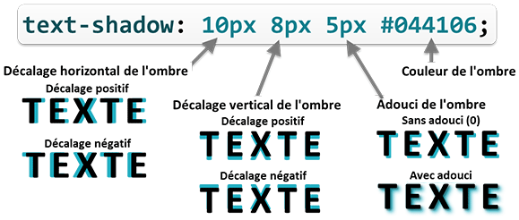

La propriété color
est héritée : elles est transmise automatiquement de l'élément
parent à ses enfants, quelque soit le niveau de descendance.
On peut donc facilement gérer la couleur de tous les textes d'une
page en mettant la propriété color
sur l'élément body, ou
sur l'élément html.
Par défaut la couleur des textes est le noir (#000000).
Si la couleur d'une bordure n'est pas spécifiée (propriété border-color
ou raccourci border),
elle aura la couleur du texte de la boîte qu'elle entoure.
Ombrage du texte
La propriété text-shadow
permet de définir une ou plusieurs ombres sous du texte.
h2 {
text-shadow: 10px 8px 5px #044106;
}
Une ombre est définie avec 3 valeurs de longueur et une valeur
de couleur.

4 valeurs pour définir une ombre
Le décalage horizontal place l'ombre du texte à sa droite (valeur
positive) ou à sa gauche (valeur négative).
Le décalage vertical place l'ombre du texte en bas (valeur positive)
ou en haut (valeur négative).
La 3éme valeur permet d'adoucir le contour de l'ombre en le rendant
flou. Plus la valeur est élevée et plus l'ombre est adoucie.
Pour avoir des ombres réalistes, l'utilisation des fonctions de
couleur avec transparence (rgba() ou hsla())
donne les meilleurs résultats.
Tester les ombres de texte
Les valeurs de décalage horizontal et vertical sont obligatoires.
Les valeurs de flou et de couleur sont facultatitves. Si la valeur
de flou n'est pas précisée elle sera par défaut de 0. Si la couleur
n'est pas précisée, c'est la couleur du texte qui sera utilisée
(propriété color).
On peut mettre plusieurs ombres sur du texte en séparant les
groupes de 4 valeurs par une virgule :
/* 3 ombres pour le texte des éléments h2 */
h2 {
text-shadow: 10px 8px 5px #044106,
-5px -8px 2px rgba(255, 240, 136, 0.5),
12px -10px 8px #03C842;
}
Les ombres sont appliquées par ordre de déclaration : la 1ère
ombre déclarée est au dessus, la 2ème est sous la 1ère, la 3ème sous
la 2ème, etc.